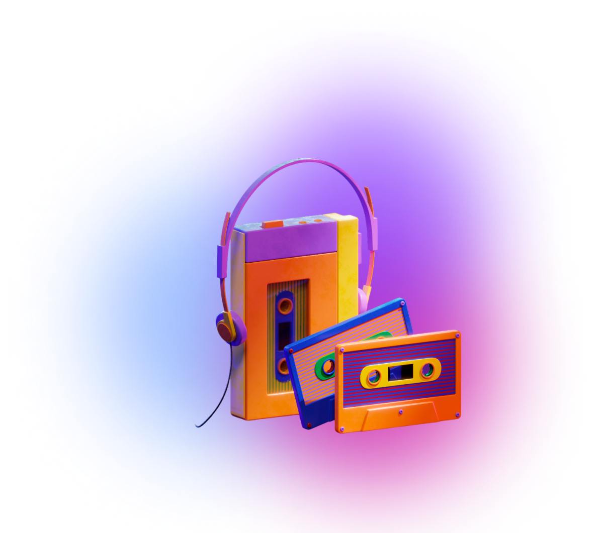

Cari yang Premium
Satset tanpa repot!
Frontend Developer &
Make-up
Consultan
Seorang frontend developer yang merajut inspirasi menjadi karya, menciptakan
website yang bukan sekadar tumpukan kode, melainkan sebuah masterpiece
digital yang memukau dan menginspirasi.
